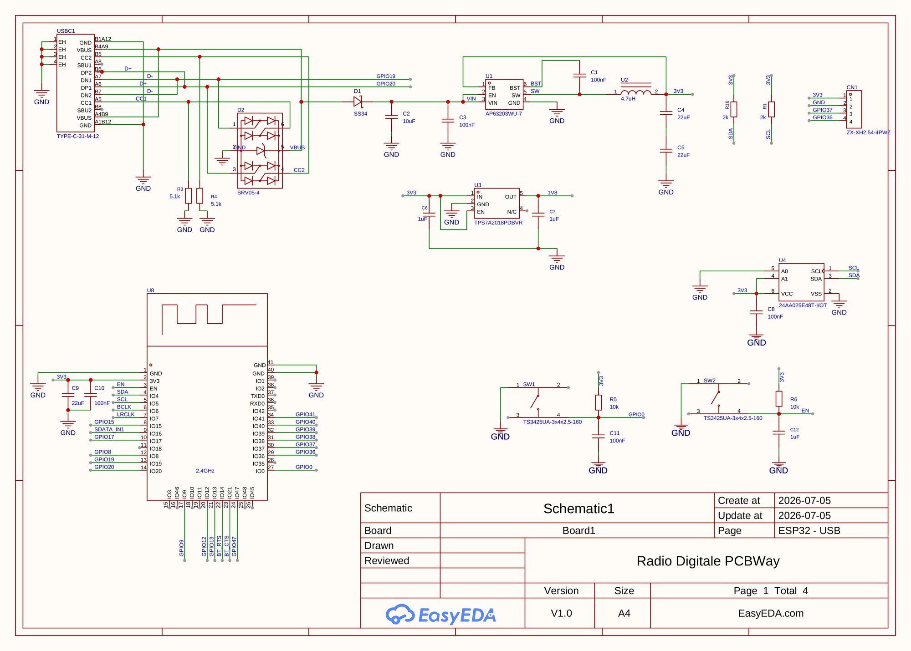
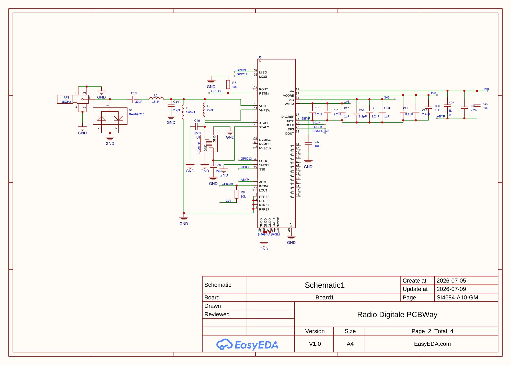
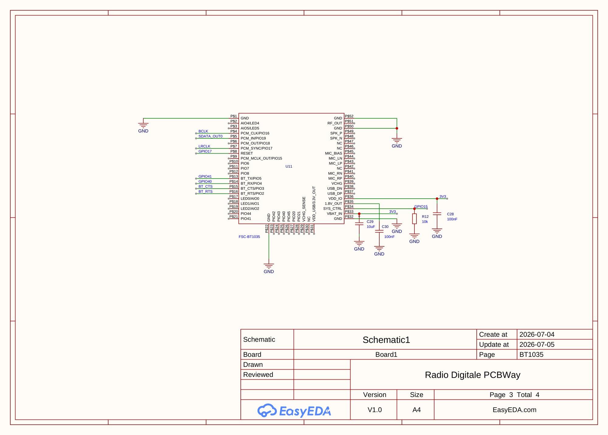
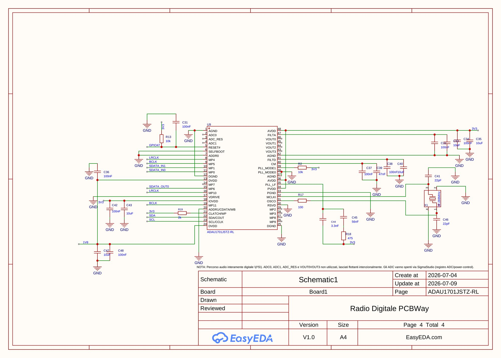

Hardware
A 6-layer, 50 × 90 mm board with four main chips, powered over USB-C.
Board v1 →
The one described on this page: ADAU1701, BT1035. Schematic, Gerbers, BOM and assembly files.
Board v2 →
ADAU1452, battery, BT1058, optical S/PDIF output. All the details on the v2 page.
Si4684
Silicon Labs
DAB+/DAB/FM tuner, external antenna on an SMA connector, its own low-noise 1.8 V rail.
ADAU1701
Analog Devices SigmaDSP
EQ, source mixing, bass and stereo enhancement. It is the I²S clock master (12.288 MHz crystal) and every audio source goes through it.
FSC-BT1035
Feasycom, Qualcomm QCC3056
Bluetooth 5.2 output with aptX, aptX HD and aptX Adaptive.
ESP32-S3
Espressif
Host controller with Wi-Fi and BLE: boots the other chips, streams web radio into the DSP, serves the REST API and handles updates.
Block diagram
FM/DAB antenna → [ Si4684 ] --I²S--> [ ADAU1701 DSP ] --I²S--> [ FSC-BT1035 ] → aptX
↑ ↑ ↑
└──── SPI ──── [ ESP32-S3 host ] ──── UART ────┘
│ I²C
Wi-Fi · NVS · HTTP API
The board
- 6 layers, impedance-controlled, two solid ground planes under the RF, crystals and USB.
- Three antenna zones: the two 2.4 GHz antennas (ESP32 and BT1035) on opposite corners, FM/DAB on SMA, with keep-outs on every layer.
- USB-C, 3.3 V from a buck plus a low-noise 1.8 V LDO for the tuner.
- The DSP program is designed in SigmaStudio and can be updated over Wi-Fi without reflashing the ESP32.
Schematic
Tap an image for full resolution. The PDF and KiCad files are on GitHub.








Fabrication
The board was fabricated and assembled by PCBWay, who sponsored part of the cost. With a QFN tuner, an LQFP DSP, two 2.4 GHz modules and a USB-C connector on 6 layers, hand assembly wasn't realistic. The only part they don't stock is the FSC-BT1035, which I soldered by hand.
You can order it from the project page on PCBWay. Disclosure: PCBWay gives me a small percentage of those orders as store credit.
Version 2
All the details are on the v2 page. In short: an ADAU1452 DSP instead of the ADAU1701, a BQ25896 charger for battery operation and an FSC-BT1058 Bluetooth module. The layout has been reviewed with BoardLab, a PCB analysis tool I develop: what it found. The files are in the Hardware-v2 folder on GitHub.